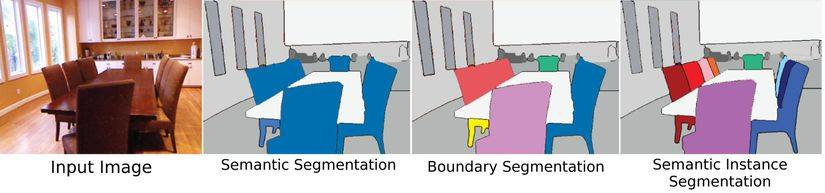

Các kiến trúc nổi bật về Deep Learning:
Chúng ta đã trải qua sơ bộ hai phần tìm hiểu cơ bản về Deep Learning, giờ tôi sẽ dẫn các bạn đến những kiến trúc nổi bật mà Deep Learning được sử dụng để các bạn có cái nhìn trực quan hơn
- Bài toán “SEMANTIC SEGMENT” (phân vùng ảnh )
- Bài toán tăng cường khả năng dự đoán, phân tích mẫu vật cho dược phẩm đang nghiên cứu .

Hình 6: Thị giác máy tính
Semantic Segmentation: Thực hiện segment với từng lớp khác nhau,ví dụ: tất cả các ghế là một lớp
Instance segmentation: Thực hiện segment với từng đối tượng trong một lớp. Ví dụ có 9 cái ghế trong ảnh, thì mỗi ghế được phân biệt với một màu khác nhau
Chính vì ưu thế cùng một loại máy tính sẽ chỉ nhìn nó bằng một lớp nên chúng đã được ứng dụng rất nhiều trọng cuộc sống hiện nay chẳng hạn: xe tự hành, chuẩn đoán hình ảnh y tế sinh học, cảm biến địa lý...
Hình 7: So sánh thông qua các thị giác khác nhau
Bằng cách sử dụng các mạng nơ-ron tích chập có thể giúp tăng cường khả năng dự đoán, hỗ trợ việc phân tích mẫu vật cho dược phẩm với hiệu quả cao hơn rất nhiều so với các mô hình Machine Learning truyền thống.
Sự phát triển của các mạng nơ-ron tích chập đồ thị (Graph Convolutional Neural Networks – GCN) cũng đã cải thiện tính ứng dụng của mô hình deep learning trong lĩnh vực hóa học máy tính. Ngoài ra, do bản chất đồ thị của phân tử (trong đó các nguyên tử là đỉnh của đồ thị, và liên kết là các cạnh của đồ thị đó), phương thức GCN có thể trực tiếp xử lý các đặc tính đồ thị của phân tử vào mạng nơ-ron.
Hình 8: Mô hình cấu trúc GCN
Trái với cách biểu hiện phân tử truyền thống, GCN có thể tự tạo ra vân riêng linh hoạt hơn và tối ưu trên máy tính hơn. Sau thử nghiệm, có thể thấy rằng, GCN dự đoán tốt hơn, có khả năng phân tích tốt hơn, và sở hữu quy trình biểu diễn đặc tính tối ưu hơn.